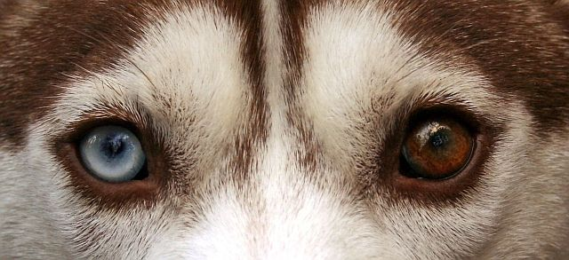

Ciekawostki
Dzięki temu, że siberian husky posiadają grube futro i są przystosowane do ciężkich warunków atmosferycznych są w stanie wytrzymać bardzo niską temperaturę w przedziale od -50 do -60 st. C
Siberian husky to rasa pierwotna, w której powstanie człowiek ingerował tylko w niewielkim stopniu. Jej przodków należy szukać wśród psów, które od tysięcy lat zamieszkiwały tereny wschodniej Syberii, rejon rzeki Kołymy, półwyspu Kamczatka czy okolice Cieśniny Beringa i Morza Arktycznego.
Siberian husky to pies o dużym temperamencie, żywiołowy, radosny i przyjacielski. Jest bardzo czujny, ale łagodne usposobienie sprawia, że nie nadaje się na stróża. Potrafi się szybko przystosować do nowych warunków. Jako pies o silnym charakterze może zdominować właściciela, jeśli mu się na to pozwoli. Świetnie dogaduje się z dziećmi, jednak z uwagi na jego ruchliwość i spontaniczność nie należy zostawiać go z maluchami bez nadzoru.
Husky nie lubią samotności, dlatego najlepiej się czują, stale towarzysząc człowiekowi lub przebywając wśród innych psów (zwłaszcza własnej rasy). Zachowały wiele cech typowych dla wilczych przodków. Częściej wyją, niż szczekają, a w ich stadzie panuje ścisła hierarchia, co prowadzi czasem do walk dominacyjnych. Grupa przejawia też silne zachowania terytorialne i może być groźna dla intruzów.
Barwy ciała każdego z Husky są rozciągnięte od czystej bieli aż do jednolitej czerni. Jednakże najczęstszymi przypadkami spotykanymi w hodowli są umaszczenia koloru: szarego, czarnego, rudego, srebrzystego, czekoladowego łaciatego (pinto) oraz złocistego połączonego z bielą. Włos naszego Husky’ego może przybierać dwa rodzaje. Podszorstek i włos okrywowy są dość niewielkiej długości , ich gęstość jest niezwykle obfita, lecz nie są one aż tak wystarczająco długie, żeby mieć możliwość przysłonienia wyraźnej linii grzbietu psa.
Tym, co najczęściej fascynuje są ich oczy. Są brązowe lub jasnoniebieskie, przy czym często jedno może mieć inny kolor niż drugie. Mają migdałowaty kształt i osadzone lekko skośnie. Te o niebieskich oczach uważane są za najbardziej urodziwe, choć podobno bardziej wytrzymałe są te brązowookie.
Dzięki temu, że siberian husky posiadają grube futro i są przystosowane do ciężkich warunków atmosferycznych są w stanie wytrzymać bardzo niską temperaturę w przedziale od -50 do -60 st. C